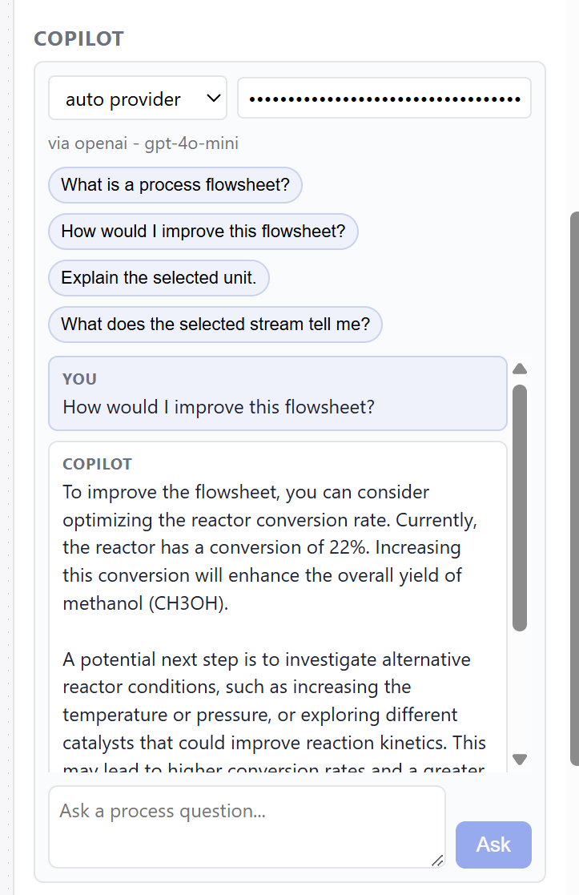

ChemFlow lets engineers and students build chemical flowsheets visually, validate process topology, run simplified engineering calculations, and explore surrogate-model optimization — all with an AI copilot that explains its reasoning.
Tools like Aspen Plus or DWSIM are powerful. But they hand you a blank canvas, expect you to already know the process, and produce results without ever explaining why a unit operation belongs in the flowsheet, what assumptions are being made, or what happens if a stream is misconfigured.
For students and engineers learning process design for the first time, this is a wall. You can't run a simulation without already knowing what you're doing — and the tool won't tell you what you're missing.
ChemFlow is built around the idea that understanding a process and simulating it should happen at the same time. Every action surfaces an explanation.

The included demo flowsheet models a simplified CO₂ hydrogenation pathway to methanol: both feeds mixing, compression to reaction pressure, pre-heating, stoichiometric reaction, cooling, and flash separation.
It is intentionally simplified — ideal-mixture assumptions, stoichiometric conversion, and Antoine K-value flash — to serve as a transparent teaching case rather than a rigorous simulation. The AI copilot will tell you exactly which assumptions were applied and where more careful modelling would be needed.
Each layer builds on the last — from visual design to AI-guided optimization.
ChemFlow v0.3 — 40+ backend tests passing.
Planned extensions that strengthen the engineering core and push the optimization further.
Validated cases will be handed off to a DWSIM worker service, results imported back, and the deviation between simplified and rigorous KPIs displayed side-by-side. This turns the surrogate into a meaningful approximation of a real simulation rather than just of a simplified one.
Mixer and reactor energy balances will be tightened. Distillation column and absorption unit types are on the scope list, along with continued expansion of the 105-compound property database beyond current species.
Current optimization is single-objective. Pareto front generation will let users explore purity vs. utility cost, conversion vs. CO₂ intensity, and other engineering trade-offs with visual exploration of the non-dominated front.
The current RandomForest backend will be extended with XGBoost and a lightweight neural surrogate, allowing comparison between surrogate accuracy and training cost as the run history grows.
— items in muted text are planned; active items are shipped in v0.3